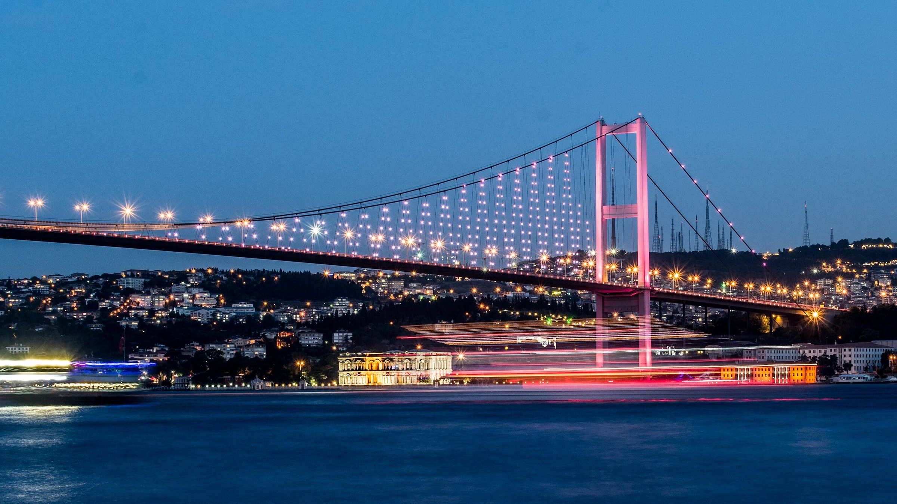
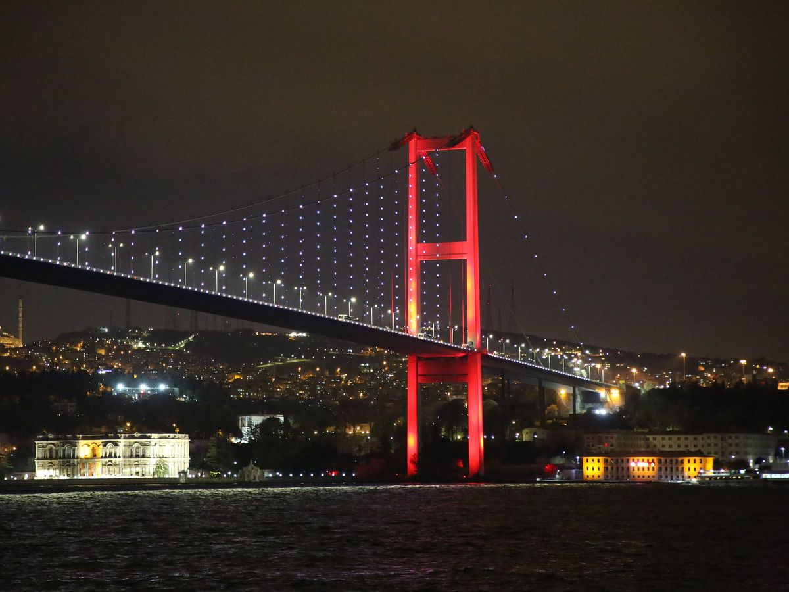

Boğazda kaptanlı motoryat, gulet, yelkenli ve katamaran; saatlik, gün batımında ya da gece. Özel gününüzü ve tarihinizi seçin, o gün boş olan yatları açalım.
Bir türe dokunun, İstanbul’daki o türden yatları görün, sonra tarihinizi seçin. Fiyatlar Türkiye’nin başlıca limanlarındaki en düşük yaz fiyatlarıdır.


Dolmabahçe ve Çırağan saraylarının önünden Ortaköy Camii’ne, Bebek koyundan Rumeli Hisarı’na; Fatih Sultan Mehmet Köprüsü’nün altından dönüp Anadolu yakasının yalılarını izleyin.
Motoryat · sürat teknesiKız Kulesi açıklarında güneşi Tarihi Yarımada’nın kubbe ve minarelerinin ardında batırın, köprülerin ışıkları yanarken akşam yemeğine oturun.
Motoryat · guletMarmara’ya açılıp Büyükada, Heybeliada ve Burgazada’nın çevresinde berrak suda yüzme molaları verin; akşamüstü Moda kıyısından şehre dönün.
Gulet · yelkenli · katamaranİstanbul’da yat çoğunlukla saatlik kiralanır; gününüzü ve saatinizi seçmeniz yeterli.
Misafirlerin rezervasyondan önce en çok sordukları. Başka bir sorunuz mu var? Bize yazın.
Yaz sezonunda Türkiye’nin başlıca limanlarında saatlik kiralama gulet ve yelkenlide yaklaşık 1.721 ₺’den, motoryatta 1.999 ₺’den, sürat teknesinde 2.499 ₺’den, katamaranda 5.941 ₺’den başlar. İstanbul’da kasım–mart düşük sezondur; yılbaşı gibi özel gecelerde fiyatlar yükselir. Seçtiğiniz tarihin kesin fiyatını rezervasyondan önce görürsünüz.
Kalkış noktası her ilanda yazar. İstanbul’da yatlar çoğunlukla Avrupa yakasında Kuruçeşme, Bebek, Arnavutköy ve Karaköy gibi iskelelerden, Anadolu yakasında Üsküdar ve Kadıköy’den kalkar.
Evet, Boğaz’da yat dört mevsim çalışır. Kışın kapalı ve ısıtmalı salonu olan yatları seçin; poyraz ya da lodosun sert estiği günlerde çıkmadan önce hava raporuna bakın.
Evet, Boğaz’da en çok tercih edilen özel günlerden biri. Süsleme, pasta, müzik ya da fotoğrafçı gibi ekstralar birçok ilanda sunulur; neyin dahil olduğunu ilanda kontrol edin ve gün batımı saatine denk gelen bir dilim seçin.
Yolcu kapasitesi her ilanda yazar. Kalabalık doğum günü ve şirket davetleri için gulet ve büyük motoryatlar, baş başa bir akşam için küçük motoryat ya da yelkenli uygundur.
ViraCheck yat kiralamaz ve tur düzenlemez; doğru yatı ve turu bulmanıza yardım eder. Fiyat, müsaitlik, ödeme ve iptal iş ortağı tarafından yürütülür; iş ortağı size ek maliyet olmadan bize komisyon ödeyebilir. Başlangıç fiyatları, Viravira’da Türkiye’nin 12 ana limanında listelenen en düşük saatlik yaz sezonu fiyatlarıdır (Kasım 2026) ve sezona ve tarihe göre değişir. Fotoğraflar temsilidir; bkz. fotoğraf kaynakları.
